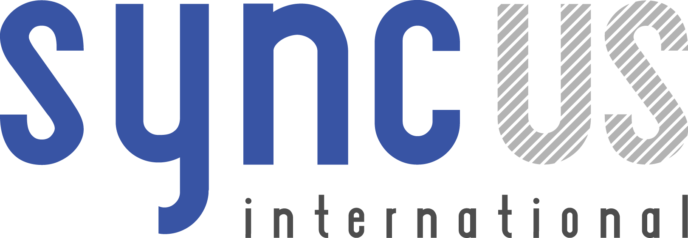

Be part of the deal flow in San Francisco. Discover opportunities for development and investment. Join us for two days of speakers, panels, and great networking, and leave with the contacts, knowledge and know-how to to grow your business in San Francisco and in China!
Grow your business in China - learn about how companies such as Lyft and LinkedIn have grown their business. Network with investors involved in cross-border trade and development.
Edwin M. Lee
City of San Francisco, Mayor
Mayor Lee is committed to promoting San Francisco economic development and keeping it a thriving, diverse, dynamic city through innovation and technology.
Ron Conway
SV Angel, Founder and Co-Managing Partner, Salesforce, Board Member
As a legendary angel investor and arguably the most uber-connected guy in tech, political and celebrity circles in the Bay Area, Ron is described by Fortune to be the Silicon Valley startup’s best friend.
Jay Nath
City of San Francisco, Chief Innovation Officer
Jay became San Francisco’s first Chief Innovation Officer after establishing the nation’s first open source government software policy and San Francisco’s Open Data Legislation. He works with the tech community and the public to help make government more transparent, efficient, and constituent- focused.
Edith Yeung
500 Mobile Collective Fund, Partner
Edith Yeung focuses on investing in mobile apps and consumer internet startups. Prior, Edith founded RightVentures - seed stage investment firm focusing on mobile and consumer internet companies.
Keith Rabois
Khosla Ventures, Partner
Keith’s led investments in Stripe, Thoughtspot, HealthTap and Teespring among many others. He also started the real estate startup OpenDoor. As a board member, Keith guided Yelp and Xoom from inception to IPO.
Luke Iseman
Director of Hardware, Y Combinator
Luke Iseman is the head of hardware of Y-Combinator. He helps the company make hardware people want faster and better than ever before. Prior, Luke is the co-foundter and CTO at Soil IQ. As a hardware veteran, Luke is dedicated to making tools for personal sustainability.
Michael Korcuska
Vice President of Product Management for China, LinkedIn
Michael is a technology-savvy leader with deep experience in social networking, e-learning and software as a service. Prior to joining LinkedIn, he served as Executive Director of the Sakai Foundation.

Michael Masserman
Lyft, Director of International Government Relations
Michael helps expand Lyft globally. Prior to Lyft, Michael served as the Presidentially appointed Executive Director for Export Policy, Promotion & Strategy at the U.S. Department of Commerce, helping U.S. businesses increase exports and compete globally.
Mark McLaughlin
Pacific Union, CEO
Mark McLaughlin is CEO of Pacific Union International, Inc. From 2009 to 2015, McLaughlin has grown Pacific Union from $2.2 billion in total sales to $7.63 billion in total sales. At Pacific Union, McLaughlin has also driven initiatives to develop joint ventures in the mortgage, insurance, and property management service lines to benefit Pacific Union’s clients.

Xenophon Giannis
Nexusguard, Vice President
With extensive experience in cybersecurity, data center IT and cloud computing, Xenophon has a successful track record creating and leading sales organizations, driving regional B2B sales efforts, and scoring key accounts and strategic partnerships with leading companies. Prior to Nexusguard, Xenophon served as senior vice president, and interim chief operations officer at Black Lotus, acquired by Level 3. In his 10-year tenure with AboveNet, Xenophon built the west coast sales organization and expanded the customer base which included the top internet content providers, media companies, financial intuitions, datacenter operators and cloud service providers.
Tony Nie LeTV, Vice President
Hope Lewis More Health, CEO
Jack Wadsworth Manitou Ventures, Co-founder, Parner, and Managing Director
Richard Kramlich
Helen Thomas Touchjet, CEO
Bo Zheng LivAll, CEO
John Batelle NewCo, Co-Founder & CEO
Stella Li Build Your Dream, Senior Vice President
Chaomei Chen Lending Club, CRO
Zhihan Zhou Kaix, General Manager
Rob Frohwein Kabbage, CEO
Seth Flam HealthFusion, CEO
Ron Suber Prosper Marketplace, President
Zhen Zhang Phoenix Finance, President
Chisoo Lyons Fair Isaac Advisors, VP
Steve Hoffman Founder's Space, CEO
Matt Epstein Zenefits, VP of Marketing
Xiaoling Gong Cloudflare, Special Projects
Mark McLaughlin Pacific Union, CEO
If you are interested in sponsoring, please email, or call us at 1 415 352 8837.
Showcase your company to hundreds of business professionals from the U.S. and China. Booths are limited, so register and guarantee your spot today!
8' X 10' - $3,500
More space and a great display means more attention from a busy audience. Includes pipe-and-drape, a large table and chairs, Wifi and lunch vouchers for both days.
6' x 2.5' - $2,500
Showcase your company to hundreds of visitors from around the world with a stunning table display. Includes a large table, chairs, Wifi access and lunch vouchers for both days.
Pier 27 James R. Herman Cruise Terminal
The Embarcadero
San Francisco, CA, 94105
ChinaSF is an economic initiative of San Francisco, a close partner of the San Francisco Center for Economic Development and City of San Francisco formed in 2008. As a non-profit organization, ChinaSF’s mission is job creation in San Francisco, accomplished through the recruitment and retention of companies in San Francisco and also inbound investment, at the same time helping San Francisco companies expand into the China market.
ChinaSF is an economic initiative of San Francisco, established by the San Francisco Center for Economic Development and San Francisco Mayor Office in 2008. As a non-profit organization, ChinaSF’s mission is job creation in San Francisco, accomplished through the recruitment and retention of companies in San Francisco and also inbound investment, at the same time helping San Francisco companies expand into the China market.
In an effort to promote Chinese and San Francisco’s cross-border development, science and cultural exchange, and thanks to the generous help and support of San Francisco’s Friendship Cities in China as well as the San Francisco Chamber of Commerce, on January 27th and 28th, ChinaSF will be hosting San Francisco’s first ever Innovation and Credit Exposition!
SyncUS International is a professional business service company with specific focuses on Sino-U.S. business connection in Internet Finance industry, which includes marketplace lending, credit reporting and FinTech. SyncUS tailors solutions for Chinese entrepreneurs, investors and leading professionals who want to make cross border investment, seek global collaboration opportunities, increase business presence and set up business networks in the United States. Meanwhile, SyncUS also partners with top-tier U.S. FinTech companies and service providers to find suitable Chinese customers, partners and investors. SyncUS cooperates with a number of industry conferences and exhibitions to provide more value-adding services. Our vision is to act as the most reliable and professional platform to bridge the Sino-U.S. Internet Finance industry.